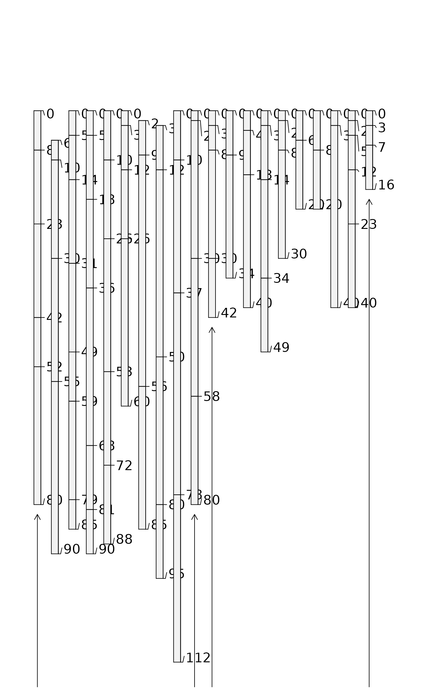

Labels groups of soil profiles within soil profile sketches.
See examples below for ideas.
Arguments
- x0
integer indices to the first profile within each group
- x1
integer indices to the last profile within each group
- labels
vector of group labels
- y0
baseline depth used for group brackets
- y1
depth used for start and end markers for group brackets (see examples)
- label.offset
vertical offset of group labels from baseline
- label.cex
label size
Note
This function is typically called by some other convenience function
such as plotMultipleSPC.
Examples
# keep examples from using more than 2 cores
data.table::setDTthreads(Sys.getenv("OMP_THREAD_LIMIT", unset = 2))
# load sample data
data(sp3)
data(sp4)
# convert soil colors
sp3$h <- NA ; sp3$s <- NA ; sp3$v <- NA
sp3.rgb <- with(sp3, munsell2rgb(hue, value, chroma, return_triplets=TRUE))
sp3[, c('h','s','v')] <- t(with(sp3.rgb, rgb2hsv(r, g, b, maxColorValue=1)))
# promote to SoilProfileCollection
depths(sp3) <- id ~ top + bottom
depths(sp4) <- id ~ top + bottom
# combine into a list
spc.list <- list(sp3, sp4)
# compute group lengths and start/stop locations
n.groups <- length(spc.list)
spc.lengths <- sapply(spc.list, length)
n.pedons <- sum(spc.lengths)
group.starts <- c(1, 1 + cumsum(spc.lengths[-n.groups]))
group.ends <- cumsum(spc.lengths)
# determine depths of first / last profile in each group
yy <- unlist(sapply(spc.list, function(i) profileApply(i, max)))
tick.heights <- yy[c(group.starts, group.ends)] + 2
# plot 2 SoilProfileCollection objects on the same axis
par(mar=c(1,1,1,1))
plotSPC(sp3, n = n.pedons)
plotSPC(sp4, add = TRUE, x.idx.offset = group.ends[1],
depth.axis = FALSE, id.style = 'side')
# annotate groups
profileGroupLabels(x0 = group.starts, x1 = group.ends,
labels=c('Collection 1', 'Collection 2'), y0=120, y1=tick.heights)
